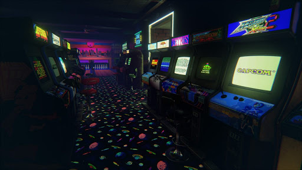
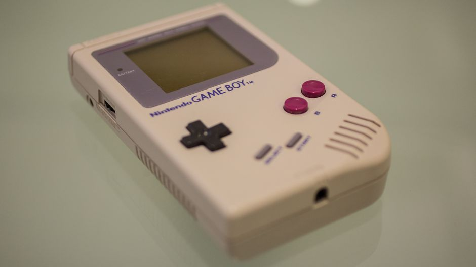
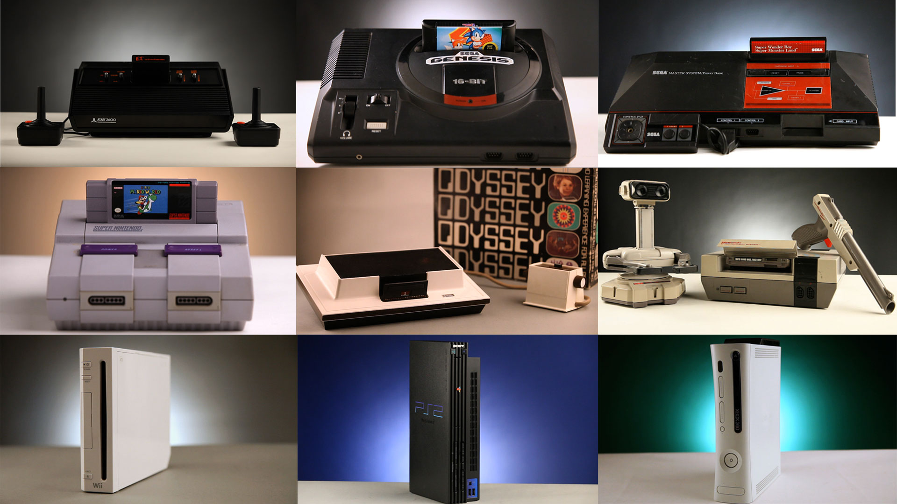

The history of video games began in the 1950s and 1960s as computer scientists began designing simple games and simulations on mainframe computers, with MIT's Spacewar! in 1962 as one of the first such games to be played with a video display. The early 1970s brought the first consumer-ready video game hardware: the first home video game console, the Magnavox Odyssey, and the first arcade video games from Atari, Computer Space and Pong, the latter which was later made into a home console version. Numerous companies sprang up to capture Pong's success in both the arcade and the home by creating clones of the game, causing a market contraction in 1978 due to oversaturation and lack of innovation.
By the mid-1970s, low-cost programmable microprocessors replaced the discrete transistor–transistor logic circuitry of the early hardware, and the first ROM cartridge-based home consoles arrived, including the Atari Video Computer System (VCS). Coupled with rapid growth in a golden age of arcade video games with titles such as Space Invaders and Pac-Man, the home console market also flourished. A major crash of the United States home video game market occurred in 1983 as the market was flooded by too many poor-quality games, consumers lost confidence in the major companies involved, and the sector saw competition from inexpensive personal computers and new types of games being developed for them. The crash set the stage for Japan's video game industry to take leadership of the market, which had only suffered minor impacts from the crash. Nintendo released its Nintendo Entertainment System in the United States and other Western markets in 1985, helping to rebound the failing video games sector. The latter part of the 1980s and early 1990s saw video games driven by improvements and standardization in personal computers, and the console war competition between Nintendo and Sega as they fought for market share in the United States. The first major handheld video game consoles appeared in the 1990s, led by Nintendo's Game Boy platform.

The early 1990s saw two major shifts in technology, the introduction of optical media via CD-ROMs, and the ability to perform real-time polygonal 3D graphics from further advancements in computer microprocessors. Both aspects were readily incorporated into personal computers and creating a market for graphics cards, while Sony used both in its fledgling PlayStation console line, pushing Sega out of the console hardware market while diminishing Nintendo's role. By the late 1990s, the Internet also gained widespread consumer use, and video games began incorporating online elements. Microsoft entered the console hardware market in the early 2000s with its Xbox line, fearing that Sony's PlayStation would displace personal computers. While Sony and Microsoft continued to develop hardware of comparable top-end console features, Nintendo opted to focus on innovative gameplay, and developed the Wii with motion-sensing controls, which helped to draw in non-traditional players and helped to resecure Nintendo's position in the industry; Nintendo followed this same model in the release of the Nintendo Switch.

From the 2000s and into the 2010s, the industry has seen a shift of demographics as mobile gaming on smartphones and tablets displaced handheld consoles, and casual gaming had become an increasing larger sector of the market, as well as a growth in the number of players from China and other areas not traditionally tied to the industry. Traditional revenue models were supplanted with ongoing revenue stream models such as free-to-play, freemium and subscription-based games to take advantage of these shifts. Further, with digital distribution, the 2000s and 2010s saw the growth of independent game development, with indie games seen by consumers and critics on par with those produced by triple-A production studios. Hardware and software technology continued to drive improvement in video games, with support for high-definition video at high framerates, and for virtual and augmented reality-based games.